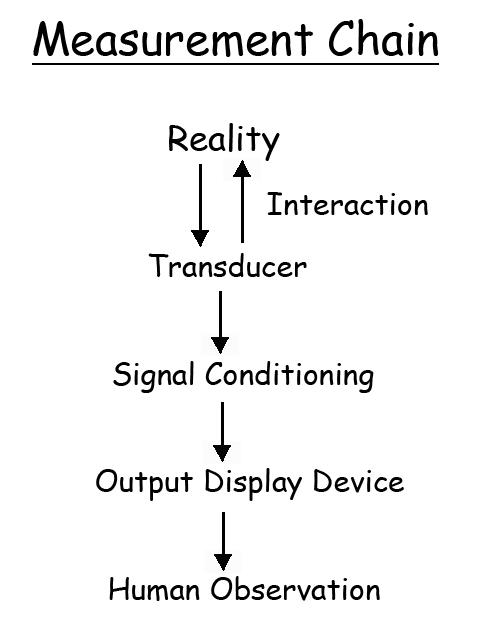
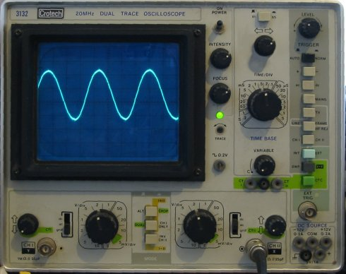

Measurement Chain Lab
The measurement Chain:

Reality is the actual phenomenon that we are trying to measure. It can be a physical quantity, an emotion or attitude (in the behavioral sciences). For scientists, this is the dependent variable and our ability to measure it depends in part on our ability to operational define it, the quality of our instruments, and our ability to interpret the results. The rest of the measurement chain addresses these issues assuming we have a solid operational definition of the phenomenon to be measured.
Transducers
The first instrument to be used is the transducer. In biomechanics, it is an instrument that transforms one form of energy to another (usually electrical) while retaining important characteristics. Examples would include a force platform, video camera, EMG electrodes, tape measure, etc. See the "Properties of Transducers Lab" for more on this topic.
The interaction refers to an undesired altering of the phenomenon caused by the transducer. In some cases, this is referred to as the Hawthorne effect which states that phenomena change when measured. The behavioral sciences are very concerned that a questionnaire (transducer) will actually change the attitudes of people and prevent the measurement of the real attitude. In biomechanics, we are concerned with altering movement by encumbering subjects with equipment or that subjects will move differently because they know they are being measured or they fear the equipment.
The signal conditioner alters the output from the transducer to match the next element of the measurement chain. Quite often, the transducer cannot measure the phenomenon directly and must be altered. examples of signal conditioning could include magnification, filtering, A/D conversion, differentiation, etc. See the "Signal Conditioning Lab" for more on this topic.
Output Display Device
The output
display
device can be a computer screen, oscilloscope, chart paper, etc.
It's purpose is to aid human observation of the phenomenon
that
was measured.

Regardless of the sensitivity of the transducer and accuracy of the signal conditioning, the accuracy and precision of the display device can compromise the measurement.
In the signal conditioning lab, we saw that signals can be sent to a computer with much higher resolution than the oscilloscope. This 'scope has 8 major division and 5 minor divisions which totals 40 divisions. We saw in the signal conditioning that a computer usually has 4096 divisions.
The image below
is a blowup of the force platform signal of a vertical jump.
The computer display has discrete divisions or picture
elements (pixels). The computer had a resolution of less than 1 Newton,
yet the plot on the computer screen has steps of about 7.2 Newtons.
Therefore, it is important to note that the display can influence the
measurement.
Human Observation
Human observation refers to the interpretation and meaning that the scientist attributes to the measurement made. It is important for the scientist to avoid personal bias in the evaluation of the evidence..